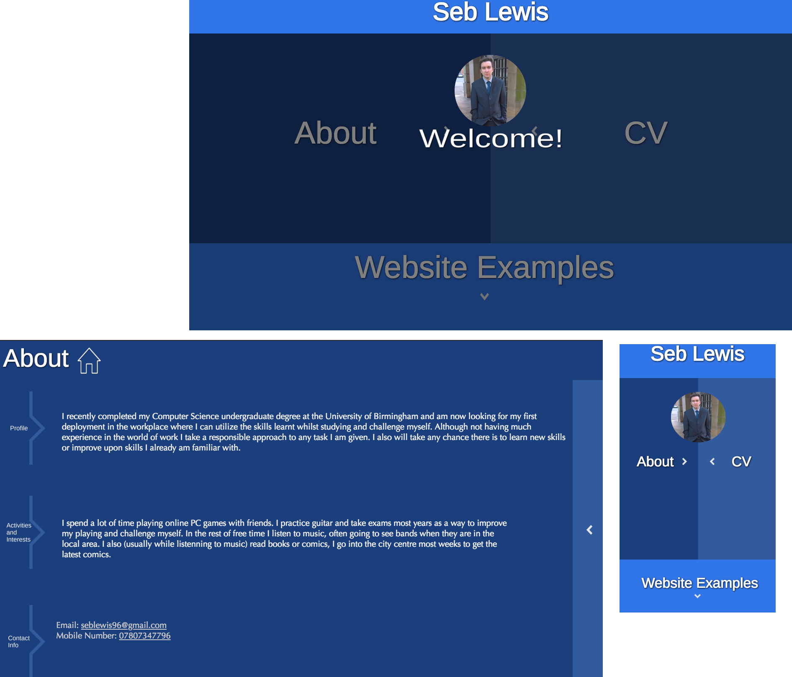
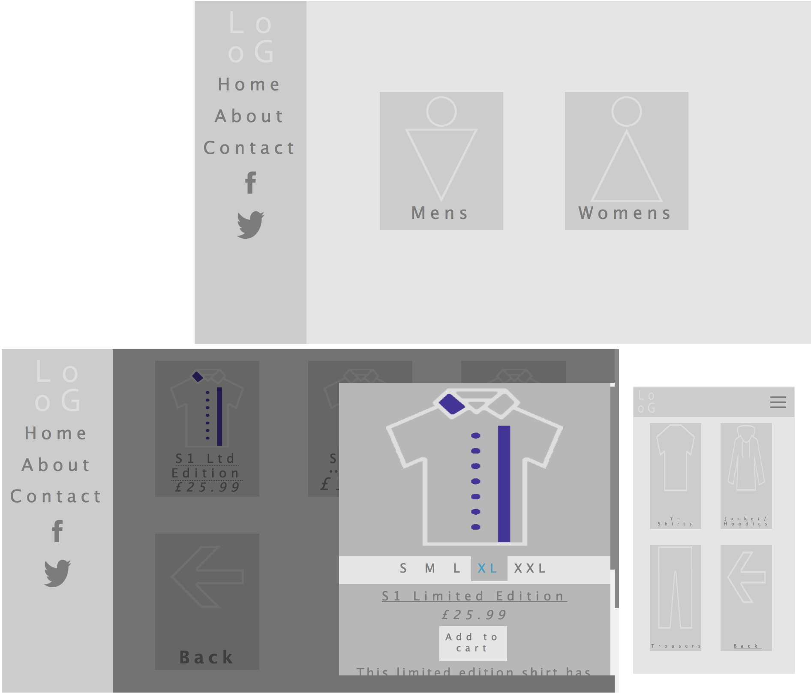
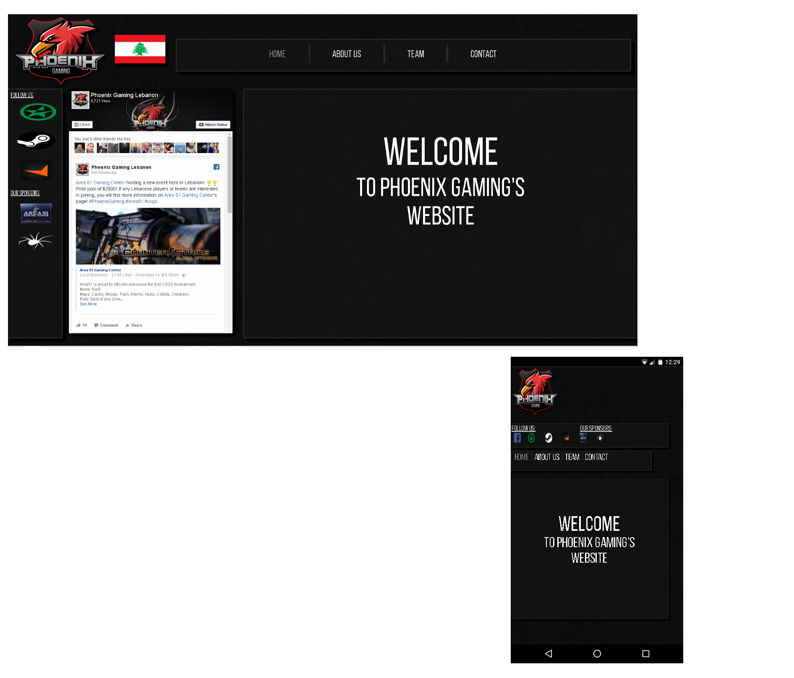
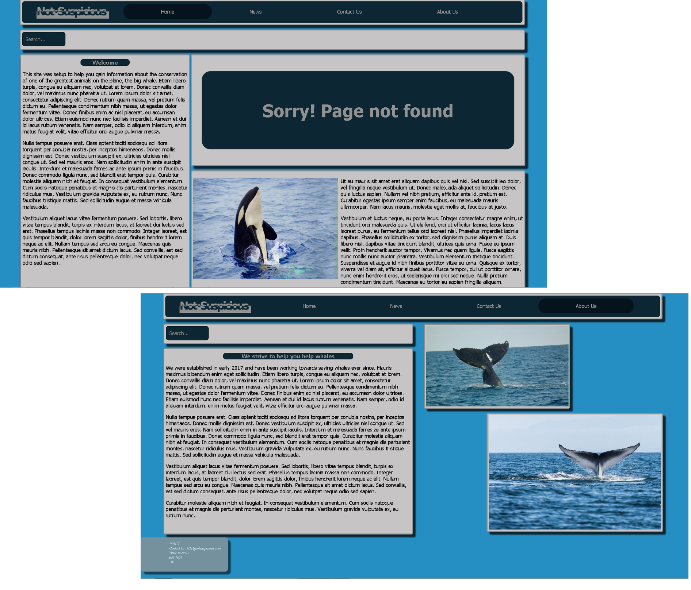
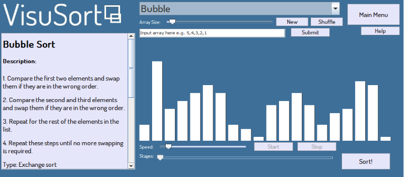

This was the inital portfolio website I made, it could still be improved and hopefully I have made an improvement to it with this new profile website.
As I had seen SASS as a desired skill for several jobs I decided to try it out by making a website with it. This website is currently filled with filler information and isn't yet complete.
 I created this page for a friend recently who is part of a team who play a game called Counter Strike, as I often play with them and they have being doing well in tournaments and are getting more followers I created a webste for them. As soon as they sort out hosting they will use this website as a hub for all the links to the various sites where people can support/follow them.
Projects
Skills used:
Problem Solving
Time Management
Teamwork
Flexibility
Creativity
While studying at university I had multiple opportunities to improve my general skills such as a team project in my second year of study which helped test/improve my teamwork skills, In my third year of study I completed a individual project; both of these were successful and were great learning experiences dependant on time management, flexibility, problem solving and planning. Both of these projects also had supervisors and documentation to be completed giving me a greater idea of how these type of projects would work in the real world.
Final Year Project

My initial idea for this project I had to do in my final year was to focus on concepts I learnt in Information and the Web and Networks modules. The title of the project I settled on was Implementation of a hidden functionality in a web page; my goal for this project was to create a website where someone could access some hidden sensitive information only if they knew some key while someone who didn't know the key would be unaware of any hidden information. For this project I produced a basic website(not my best), a server, and some hidden key that could be used within the website. Download Report
Team Project

The initial brief for this project was to create a piece of software for teaching an aspect of computer science. After some discussion amongst the team we decided to cover sorting algorithms and target our teaching software at first year computer science students. After we completed the teaching section, we added a section for people to login and take tests on what was covered. A screenshot of the completed software can be seen to the left. Download Report